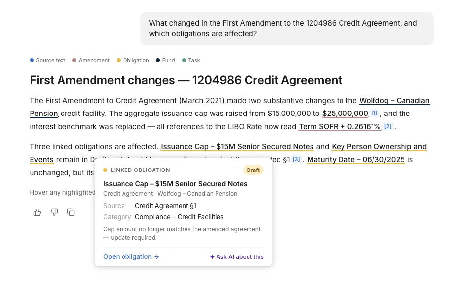
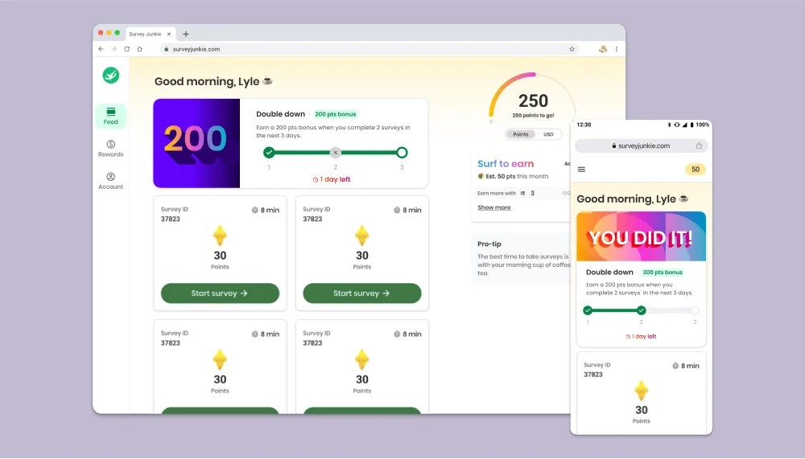
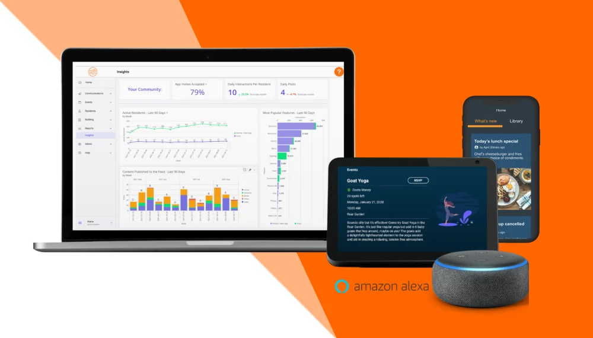

Most recently
Senior UX Designer at Ontra – launched Ontra AI, a legal document intelligence platform, and grew weekly questions from about 200 to 700. Answers now start appearing in about 17s instead of 95s, 83% faster, and the error rate fell 98%, from 9% at launch to under 0.2%.
Selected projects

Senior UX designer
Trust is the key to AI experiences
Ask AI had a trust and speed problem. Lawyers needed more confidence in the answers and to get those answers faster.
View case study (slides)
- Role
- Ran customer discovery and weekly feedback and retention reporting, designed streaming answers, citations, and conversation management, proposed search-effort controls, and shipped 20+ PRs, from small updates to full features.
- Outcome
- Weekly queries grew from about 200 to 700 and mean latency fell from 95s to 45s, with the first answer text appearing in about 17s. AI Search now covers multiple document types and structured data, and reaches outside AI apps through MCP.

Principal product designer
Impossible promotions
Survey Junkie, Disqo's survey rewards app, ran a promotion program meant to raise engagement. It made engagement a lot worse. Why?
View case study (slides)
- Role
- Led strategy workshops and research, designed and prototyped solutions, managed stakeholders, and tested with users.
- Outcome
- Churn in the week after a promotion fell from 47% to 13%, and surveys per member went from 22% fewer to 8% more. Promotions are simpler and more achievable, more of the time. The in-app experience is more transparent, and a "high intent member" model picks the best people to target.

Design lead
Designing for older adults in a three-sided marketplace
Senior living communities rely on outdated, inefficient, and costly ways to handle communication, content, and security.
View case study (slides)
- Role
- Set strategy and vision, researched, designed and prototyped, ensured accessibility, managed stakeholders, tested with users, and created the branding.
- Outcome
- Shipped an end-to-end product suite for secure, timely communication that each community can tailor, serving every stakeholder.